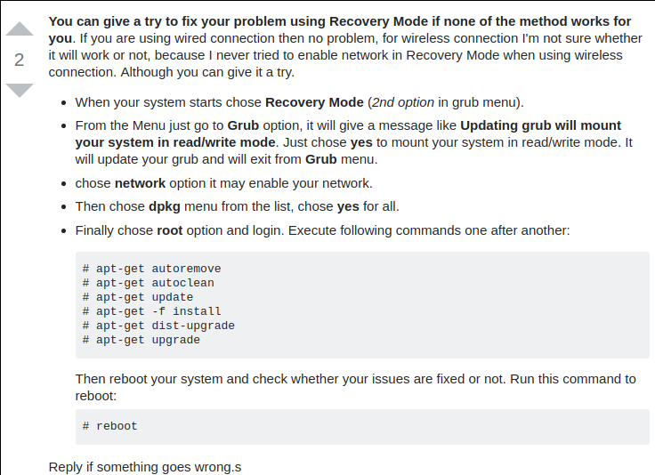
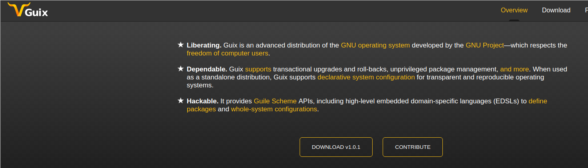
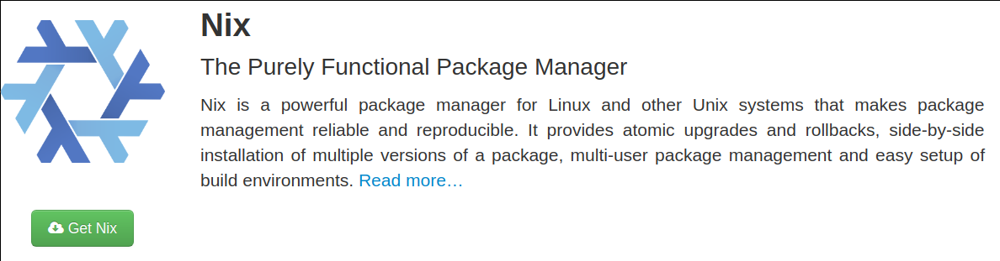
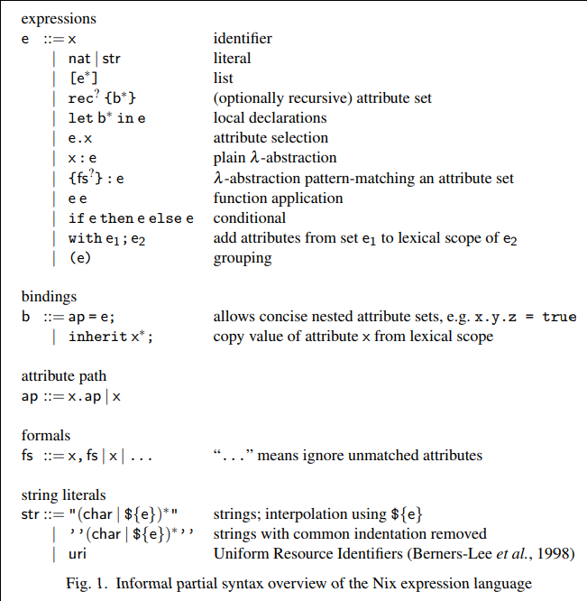
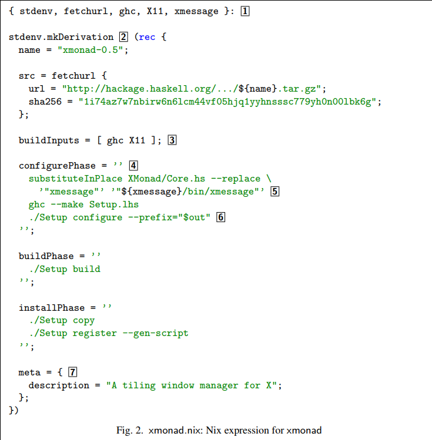
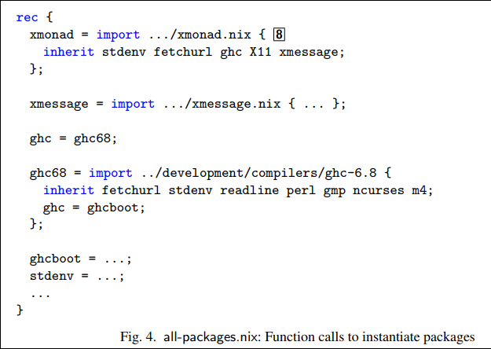
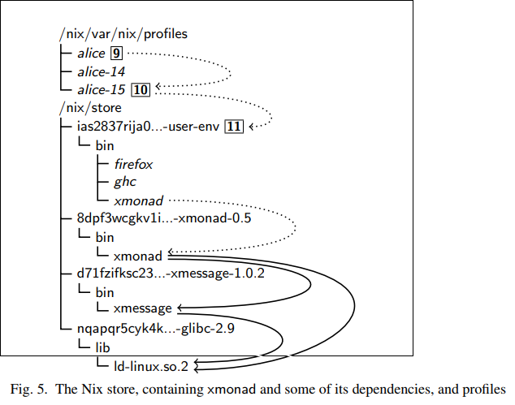

Functional Programming: Real World Performance, Nix and Warp Server
Wong Ding Feng
Created: 2019-07-29 Mon 23:35
1 Who am I? Introduction to myself
- Follow me on github! https://github.com/TomatoCream
- Linux user for 5 years now
- Ubuntu
- Proxmox
- ArchLinux
- Centos (server management)
1.1 My interests
- AI, ML
- Functional programming and abstraction (what the hell is so good about this?)
1.2 For whom is this talk for?
- Linux users! Sorry windows users
- But not really (departs away from a unix way of doing things)
- Show you what functional programming can do?
- purity?
- referential transparency?
- State management
- DevOps
- Images, Docker, VM, Clusters
- I will give you a feel of
Nixnot the nitty gritty details
2 The big problem
- Has anyone ever used some sort of package management system?
2.1 Some modern day package management systems
| Package manager | Distributions |
|---|---|
| apt, apt-get | Debian, Ubuntu |
| rpm, yum | Redhat, Centos |
| pacman | ArchLinux |
| brew | MacOS |
2.2 What about sub ecosystems?
| Package manager | ??? |
|---|---|
| pip, virtualenv, pipenv | Python2,3(???) |
| npm, yarn | Nodejs |
| cabal, stack, hackage | Haskell :) |
| go? | go? |
| brew | MacOS |
| use-package, vim, fish, zsh | … |
2.3 How to make a package manager?
- What are the basic parts that we need?
2.4 How to make a package manager?
| build dependencies | What do I need to build the program? |
| runtime dependencies | What .so shared objects do I need? |
| configurations | What in /etc/... config files |
- essentially think of it as a graph, whenever we upgrade or install a package, we are mutating a node on this graph to point to something else.
2.5 Problems with modern package management
https://wiki.debian.org/DontBreakDebian#Don.27t_make_a_FrankenDebian

2.6 TODO Why imperative is bad? What is so imperative about installing packages?
referential transparency
2.7 Are you familiar with DEPENDENCY HELL?
2.8 All types of "DEPENDENCY HELL"

- { DLL, dependency, npm, cabal } hell, different names for the same demon
- conflicting dependency
- shared components like library links
cuda.7.sovscuda.6.so
- shared components like library links
- multiple version side by side and roll backs
- possible solutions
- set of stable packages like
Debianorhaskell stack snapshots
- set of stable packages like
2.9 Not Atomic 01
- kill upgrades half way
- packages left in a semi updated state
- sometimes need to manually remove lock files
COMMAND PID USER FD TYPE DEVICE SIZE/OFF NODE NAME dpkg 29329 root 3uW REG 8,7 0 262367 /var/lib/dpkg/lock
2.10 Not Atomic 02
- can be fixed but kinda troublesome.

2.11 Whats bad about imperative summary?
- No referential transparency
- cannot point to older versions of the same thing
- Dependency hell
- conflicting dependencies
- Not atomic upgrades
- unknown state if break half way
These problems are really similar to the problems with imperative languages!
like JAVA and people have already made solutions for them like how Haskell
does. We could learn a thing or two from them.
3 What it should/could/would have been?
- Imagine now that we implemented all the things of a functional programming language to create a functional package management system?
- What can we do with this?
3.1 GUIX vs Nix
- 
- 
3.2 Introducing Nix Package Management
- solves all of the problems above
- No referential transparency
- cannot point to older versions of the same thing
- Dependency hell
- Not atomic upgrades
- unknown state if break half way
- No referential transparency
3.3 Main mechanism
- referential transparency
- install everything in path
/nix/store/{hash}-name - via
symlinking
- install everything in path
3.4 What you get for free with this mechanism?
- no
sudo - easy revert and roll back
- select specific version
- 2 different version can run at the same time
- same development environment as the runtime environment!
- nix-shell
3.4.1 no sudo, where is my sudo?
- linux was developed as a
time sharingsystem - many users were expected to share a single computer.
thus to manage conflicts, a
super user,rootwas required to install and manage packagesnix-env -iA nixos.figlet
3.4.2 easy revert, rollback
figlet "I am here!"
nix-env --rollback
figlet "are you still here?"
3.4.3 Select specific version
cd ~/projects/nix-config/
git checkout ??
nix-env -f ~/projects/nix-config/ -iA screenfetch
screenfetch 2016 vs current
3.4.4 Installing and running 2 version of same software
stack --version su stack --version
3.4.5 Same development environment and runtime environment
- I am not an electrical engineer or something but I program my
own keyboard. So I need some sort of firmware flasher. like
dfuprogrammerI dont need it on my system.
cd ~/projects/qmk_firmware/
make
dfuprogrammer
nix-shell
make
dfuprogrammer
3.5 Going all the way, NixOS
- whole system management via Nix and thus NixOS
- Version controlled operating system
- show OS reboot
- I wanted to show my generations so had been delaying removing my older generations
df -h / nix-collect-garbage --delete-older-than 10 --dry-run
3.5.1 NixOS
- show file:///home/df/nix-config/configuration.nix
- python package management file:///home/df/nix-config/configuration.nix
- gnupg agent file:///home/df/nix-config/configuration.nix
- ports file:///home/df/nix-config/configuration.nix
- I think it helps me get a state of all the ports in one place
- users and security all in one place
file:///home/df/nix-config/configuration.nix
- authorisedkeys
- postgresql can be packaged in
shell.nixfile:///home/df/nix-config/configuration.nix- separate project called
nixos-shellhttps://github.com/chrisfarms/nixos-shell
- separate project called
- filesystems file:///etc/nixos/hardware-configuration.nix
3.5.2 docker
https://nixos.wiki/wiki/Docker
virtualisation.docker.enable = true; users.users.<myuser>.extraGroups = [ "docker" ];
nix-build '<nixpkgs>' -A dockerTools.examples.redis
docker load < result
https://github.com/NixOS/nixpkgs/blob/master/pkgs/build-support/docker/examples.nix
3.5.3 easy cd/dvd
cd ~/projects/nixpkgs
nix-build -A config.system.build.isoImage -I nixos-config=modules/installer/cd-dvd/installation-cd-minimal.nix default.nix
3.5.4 easy vm
cd ./nixops
nixops create -d simple02 network.nix
nixops deploy -d simple02
deployment.targetEnv = "ec2"; deployment.region = "eu-west-1";
4 How does nix actually work?
4.1 Nix expressions
- functional expressions, not general purpose please do not program things with it
- comes with its own BNF grammar

4.2 Language features
- Nix expressions
- dynamically typed
- lazy
- pure
4.3 The main point
- Nix expressions are here to describe a graph of build actions
called
derivations- build script
- set of environment variables
- set of dependencies
4.4 Example: Xmonad

4.5 Example: Xmonad

4.6 Main mechanism
